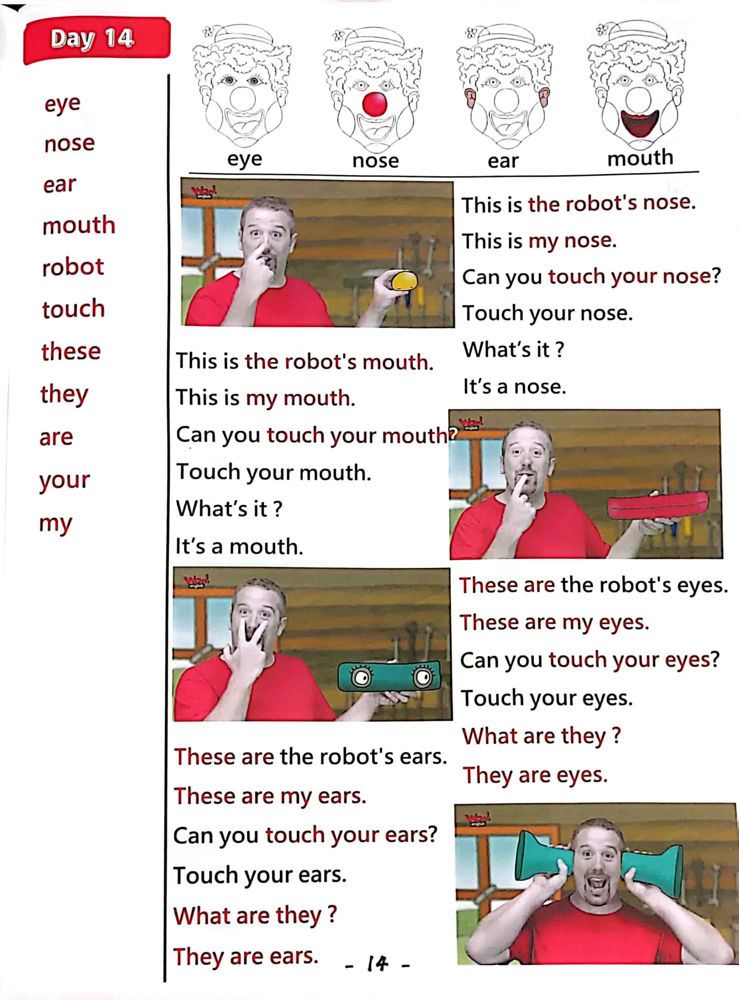

Day 14
Unit 5 · story
教材重点
教材重点依据网盘文件“第三级红色每日打卡全.pdf”，PDF 第 16 页对应 Day 14；以原图为准，避免对图片文字做不可靠的自动识别。
网盘教材重点原图 · PDF 第 16 页对应 Day 14

Unit 5 · story · 5–6岁
robot · hello · please · look
Hello, hello, hello, hello, everyone. Hello. Hello.
台词本为机器转写，可能存在识别误差；不等同于视频逐字原声。
详细内容
Part 1 核心词汇
必须掌握 · 4 个Part 2 跟读句型与句型拓展
左侧保留台词本原句，右侧为替换练习；拓展内容不是视频逐字台词。
Hello, hello, hello, hello, everyone. Hello. Hello.
Everyone, hello. Hello.
Everyone say, hello. Everyone.
Eyes, ears, mouth and nose.
Okay, hello, hi, look, I'm making a robot. Yeah.
Part 3 台词本全文
来源：第3级台词本 · 014.Wow!Red - Unit 5 'face' - part 1 story_5_1.pdf。以下保留网盘 PDF 的机器转写文本，仅清理了文件路径页眉和空行。
Hello, hello, hello, hello, everyone. Hello. Hello.
Everyone, hello. Hello.
Everyone say, hello. Everyone.
Eyes, ears, mouth and nose.
Right.
Okay, hello, hi, look, I'm making a robot. Yeah.
I've nearly finished, I just need to find the things for the robot's face, okay? Where's the nose Let me
l
ook.
Oh, ha, here it is. Look.
This is the robot's nose.
This is my nose. Can you touch your nose.
Touch your nose, yeah, what is it say with me, it's a nose, it's a nose, it's a nose. What is it.
It's a nose, it's a nose, it's a nose, and again, what is it It's a nose, it's a nose, it's a nose. Yeah. Okay.
What's next? Ah, let's look for the robot's mouth, hey here it is. Ah, look.
This is the robot's mouth here. This is my mouth.
Can you touch your mouth yet touch your mouth What is it It's a mouth, it's a mouth, it's a mouth. What
i
s it.
It's a mouth, it's a mouth, it's a mouth. And again, what is it.
It's a mouth, it's a mouth, it's a mouth, yeah, and this is the robot's mouth. Ah,
Right How about the eyes Hell look.
The robots.
Eyes, these are the robot's eyes, these are my eyes. Can you touch your eyes, touch your eyes? Yeah,
Oh, what are they They are eyes. They are eyes, they are eyes. And again,
Their eyes, their eyes, their eyes one more time, what are they their eyes, their eyes, their eyes? Yeah,
great.
So I've got the robots nose, mouth and eyes, but what's missing.
Oh yeah, the ears. Hey. Who look.
Okay?
These are the robots is, hey, what are they They are ears. They are ears, they are ears, what are they.
They are ears, they are ears, they are ears, and again, what are they They are ears They are ears, they
are ears, yeah,
Great, everything's ready for me to finish. The robot.
/
-
/3/014.Wow!Red - Unit 5 'face' - part 1 story_5_1.txt[2022/3/29
星期二
6:47:15]
Let's put all these things on the robot's face. Hey, I need help.
Maggie, maggie, can you help, please.
I'm praying with my books. Okay, come in, steve.
Hey Maggie, can you give me the nose, please, but watch out.
This could be dangerous, OK, here we go, OK, no, please, OK?
HA, HA, is it a nose? No? HA, HA, it's a mouth, but SH,
Don't tell Steve, OK, no is please. You are, thank you.
Always, please.
Are they eyes.
No, what are they.
They are ears, yeah, but shush, don't tell Steve.
I please say, thank you. Now please.
Is it a mouth? No, it's a nose. But don't tell Steve.
Email please. Thank you.
And ears. Please.
Are, they is no. They are eyes.
Don't tell Steve.
You finished.
Hey,
Hall, that's not right, or Maggie, you naughty naughty bird, look at my robot's face.
Eyes, ears, mouth and nose everywhere. It's crazy.
Oh, maggie, go and play with your toys.
I'l
l
finish the robot, bye bye. Everybody see you next time.
e